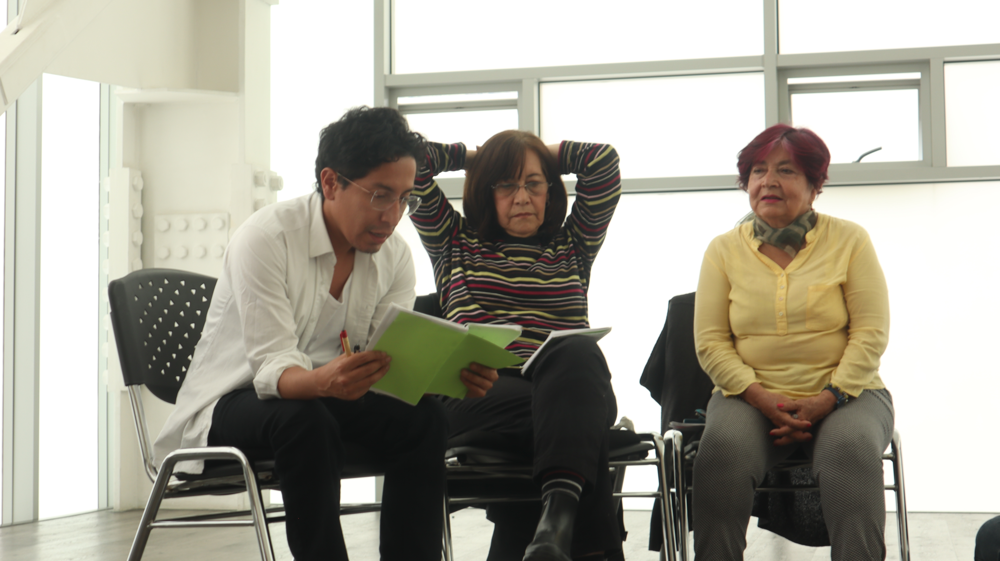

Luz Amanda Sarmiento Clavijo
Soy una habitante de la Cande desde la infancia, mi historia hace parte de sus calles y sus calles hacen parte de lo que soy, que bonito hacer memoria con los vecis.

Luz Marina Osorio
Soy vecina de La Candelaria y me interesa mucho el arte.

Kin Satori
Soy vecina de la candelaria y hago freestyle, me encantaría poder participar de este taller de improvicación con Oscar a quien admiro mucho y de quien espero poder seguir aprendiendo ahora que se abre esta oportunidad de improvisar y crear en un contexto más comunitario. Me serviría mucho en mi proceso creativo poder aprovechar estas clases. gracias!

María del Carmen Torres Velasquez
Soy veci!

Brenda Valentina Hernández Polanco
Soy actualmente estudiante de licenciatura en artes escénicas, vivo cerca a la candelaria y desde niña recorrí la candelaria vendiendo con mis abuelas. La candelaria fue el lugar donde crecí y encuentro en esta propuesta una oportunidad de vincular mi quehacer artístico y mis memorias en este territorio.

Jhon Sebastián Atehortúa González
Soy actor, comunicador audiovisual
y bailarín de danza contemporánea.
Creo que Veci Lab puede ser un espacio
donde confluyan todas las actividades que
me apasionan, un lugar para explorar y aprender
sobre la ciudad. Aunque nací en la hermosa
Bogotá crecí fuera de ella, ahora a mi
regreso tengo la iniciativa, el amor y la
dedicación para formar parte de este lugar
y aprender sobre ella a través del arte.
Además, siempre me encanta estar en movimiento,
y veo en este laboratorio una oportunidad para
seguir creando, aprendiendo, y conocer nuevas
personas con quienes pueda intercambiar conocimientos
y experiencias.
---
Espero que esta versión refleje lo que querías transmitir.

Carolina Vega
Porque soy vecina del Delia y me parece muy chévere que quieran hacer cosas con los vecinos, esto ayuda a afianzar el sentido de pertenencia y a cuidar la localidad.

Sergio Iván Torres Díaz
Soy vecino de la candelaria usuario y amante del Delia, con vocación audiovisual e introspectiva.

Alan Ávila Torres
Vecino invitado. Hijo de María del Carmen
Sandra Lesmes